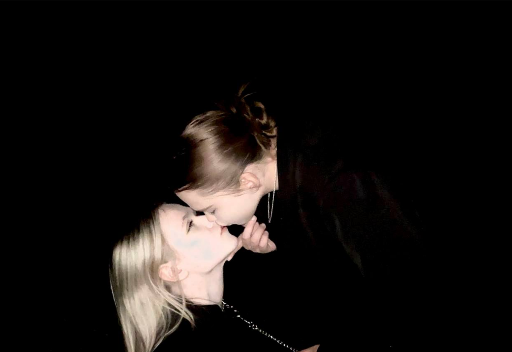

Прошмандовка Киреевска
Основное
ФИО:
Арина Александровна Никонова
Город:
Киреевск, Тульская область
Телефон:
+7 953 191-20-83
Раннее был Email:
arinanikonova@gmail.com
Профили
VK:
Arina Nikonova
Instagram:
@arisanikonova2251
Youla:
Профиль
OK.ru:
Профиль
Telegram (основной):
@79531912083
Telegram (удалённый фейк): @joker100214, ID: 1855043793 — зарегистрирован в мае 2021, последнее появление: 21.10.2023
Родственнички
Александр Жабин(папа)
Александр Никонов
Ирина Никонова
Шлюха

Видео
Записи
Арина Александровна Н.
Арина Никонова
Аришка
Шлюха.
Ариха Чеееек
Арина6б
Подруга Насти
Ариша
Ариша ❤️✌️
Арихундер Никонова
Жёнушка ❤
Любимая Эпл